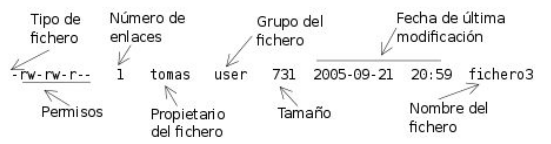
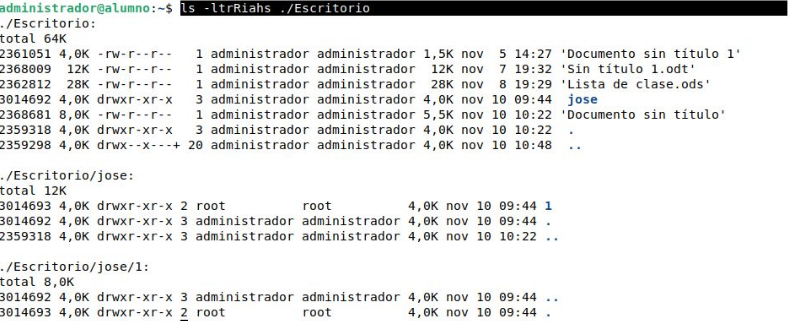
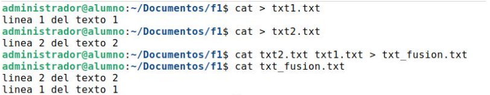

1. Listar directorios.
El comando que nos permite listar el contenido de un directorio, tanto a nivel de subdirectorios que hubiera como de archivos que contenga el directorio sobre el que se quiera listar es "ls".
Sintáxis: ls [opciones] directorio/archivo
Opciones:
-l: muestra la lista en formato largo.
-t: ordena por fecha demodificación.
-r: invierte el orden de salida.
-d: muestra la información sobre el directorio en vez del contenido.
-R: lista recursuvamente el contenido de cada directorio.
-i: muestra el número de i-nodo.
-a: muestra los archivos ocultos.
-h: muestra el tamaña de cada fichero en K, M, G, etc.
-s: muestra el tamaño de cada fichero en bloques.
-S: lista los archivos ordenados por tamaño (de menor a mayor).
El signidicado de los atributos arrojados por el comando "ls-l" son:

El comando "ls" lo podemos ajustar a nuestra conveniencia concatenando cada opción una tras otra como en el ejemplo siguiente:

2. Mostrar el contenido de un archivo.
El primer comando que vamos estudiar para mostrar el contenido de un archivo es el comando "cat". Este comando muestra por la salida estándar (la pantalla) el contenido de un archivo, además de esto, podremos crear un archivo o incluso fusionar archivos.
Sintáxis: cat [opciones] [lista_archivos] [{< | <<} archivo]
Opciones:
-A: muestra todo el contenido del archivo, incluyendo los caracteres especiales.
-b: numera las líneas no vacías.
-n: numera todas las línea, incluidas las vacías.
Dentro del tercer campo de la sintáxis vemos dos símbolos, los cuales actúan de la siguiente forma:
>>: sobrescribe si existe el archivo, o en caso contrario lo crea.
>: añade al contenido de un fichero existente, o en caso contrario lo crea.
Por tanto, se emplea la orden cat para crear archivos de escaso contenido de forma rápida. Para ello, se emplea el comando cat, seguido de ">" o ">>" y de un archivo. De esta manera, el intérprete de comandos espera que introduzcamos texto hasta que pulsemos la combinación de teclas CTRL+D.
Utilizando estos símbolos, podríamos crear dos archivos de texto y fusionarlos en uno solo.

Otros comandos de impresión
Para imprimir el contenido de ficheros también podemos utilizar los siguientes comandos:
- more [lista_archivos]: visualiza el contenido de los ficheros por páginas.
- less [lista_archivos]: igual que more, pero es más versátil y potente, resultando ideal para ficheros grandes.
- head [-n] lista_archivos: visualiza las n primeras líneas de uno o varios ficheros de texto, por defecto muestra 10 líneas.
- tail [-n] lista_archivos: visualiza las n últimas líneas de uno o varios ficheros de texto, por defecto muestra 10 líneas.